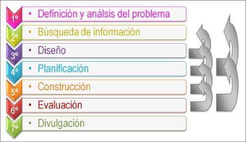
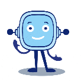

El proceso tecnológico o método de proyectos es el método de trabajo que utilizamos para resolver un problema o necesidad, que consiste en dividir el trabajo en distintas fases e ir superando cada una de ellas, para al final obtener el objeto tecnológico que resuelva ese problema o necesidad.
Si nos fijamos en la historia del hombre, podemos comprobar cómo a lo largo de ésta el hombre se ha ido encontrando con distintas necesidades (obtener agua, vivienda, transporte, comunicaciones, etc.) y para resolverlas ha inventado diferentes objetos tecnológicos.
Lectura facilitada
El proceso tecnológico o método de proyectos es el método de trabajo que utilizamos para resolver un problema o necesidad, que consiste en dividir el trabajo en distintas fases e ir superando cada una de ellas, para al final obtener el objeto tecnológico que resuelva ese problema o necesidad.
Si nos fijamos en la historia del hombre, podemos comprobar cómo a lo largo de ésta el hombre se ha ido encontrando con distintas necesidades (obtener agua, vivienda, transporte, comunicaciones, etc.) y para resolverlas ha inventado diferentes objetos tecnológicos.
2. El método de proyectos
Como hemos definido antes el proceso tecnológico o método de proyectos es el método de trabajo que utilizamos para resolver un problema o necesidad, que consiste en dividir el trabajo en distintas fases e ir superando cada una de ellas, para al final obtener el objeto tecnológico que resuelva ese problema o necesidad.
Necesidad o problema: lo primero será identificar qué necesidad o problema queremos resolver y las condiciones o requisitos que debemos cumplir. Por ejemplo “diseñar un objeto para exponer los libros en mi cuarto”.
Idea: como veremos, un problema o necesidad puede tener muchísimas soluciones. Nosotros tendremos que elegir la más adecuada para nuestro caso particular. Dividiremos esta fase en dos partes:
Búsqueda de ideas: para ello buscaremos información sobre problemas similares, así podremos ver cómo se han resuelto y aprovechar ideas para nuestro caso.
Elección de la mejor idea: que haremos en tres etapas:
Idea y boceto individual: primero elaboraremos una idea individualmente y dibujaremos un boceto (dibujo en perspectiva con poco detalle, sin medidas y a mano alzada) para explicar nuestra idea al grupo de trabajo.
Puesta en común: compartiremos nuestras ideas con el grupo explicándonos entre nosotros nuestras propuestas. Elegiremos la idea común para todo el grupo, que podrá ser la de uno de los miembros o la combinación de las ideas de todos o de algunos miembros del grupo.
Boceto del grupo: dibujaremos un boceto de nuestro diseño colectivo.
Desarrollo de la idea: una vez que sabemos cómo vamos a resolver el problema o necesidad en nuestro grupo tenemos que desarrollar nuestra idea. Hay varias soluciones: hacer una estantería de madera clavada a la pared ajustada a las necesidades, hacer un mueble estantería apoyado en el suelo, hacer un armario para los libros. Habéis seleccionado hacer una estantería de madera clavada en la pared. Hacéis un boceto previo a la elaboración de documentos Para desarrollar la idea realizaremos dos pasos:
Diseño: para explicar nuestro diseño realizaremos tres dibujos o planos:
Croquis: es un dibujo en perspectiva con medidas y acotado. Se realiza a mano alzada o con reglas pero con especial atención a los detalles del dibujo.
Planos de vistas: realizaremos los planos de alzado, planta y perfil de nuestro diseño.
Plano de despiece: dibujaremos en detalle, con medidas y acotación, cada una de las piezas que componen el diseño.
Planificación: ahora vamos a planificar nuestro trabajo en dos pasos:
Presupuesto: necesitamos saber los gastos que va a suponer nuestro trabajo, para ello elaboraremos un presupuesto donde detallaremos el coste de los materiales, herramientas y mano de obra, necesarios para fabricarlo.
Hoja de procesos: repartiremos el trabajo entre los miembros del grupo, detallaremos quién va a hacer cada pieza, cómo, con qué materiales y decidiremos el orden que seguiremos para fabricarlas.
Construcción: partiendo del diseño y planificación de la fase anterior, fabricaremos las piezas teniendo en cuenta las técnicas de fabricación necesarias y las normas de seguridad, higiene y de prevención de riesgos en el taller. Siguiendo la planificación, construís el objeto
Prueba o verificación: Comprobaremos el funcionamiento del objeto fabricado y verificaremos si resuelve satisfactoriamente el problema o necesidad planteado al principio. Si lo cumple y funciona pasaremos a la fase de presentación y si no lo cumple o no funciona correctamente, a través de la fase de rediseño, regresaremos al desarrollo de la idea.
Rediseño: por esta fase pasaremos si el producto no funciona correctamente o no satisface las necesidades planteadas inicialmente. Tendremos que evaluar los errores y modificar el diseño y la planificación en lo que haga falta, para eso regresaremos a la fase 3 y desde ahí seguiremos otra vez todas las fases siguientes. Este proceso se hará todas las veces que haga falta hasta que nuestro producto esté terminado a plena satisfacción.
Presentación / Comercialización: esta fase con el trabajo ya terminado correctamente se lo mostraremos al resto de compañeros para poner en común nuestros trabajos. En el caso de la industria esta fase sirve para presentar el producto a los clientes y comenzar a venderlo (comercialización).

Manuel Torres Búa.. Fases del método de proyectos.(CC BY-SA)
Lectura facilitada
El proceso tecnológico o método de proyectos es una forma de resolver problemas o necesidades dividida en etapas.
Primero, identificamos el problema y sus requisitos.
Luego, generamos ideas, buscando inspiración en problemas similares.
Elegimos la mejor idea a través de la discusión en grupo.
Desarrollamos la idea, haciendo dibujos detallados de nuestro diseño.
Planificamos el trabajo y elaboramos un presupuesto.
Luego, construimos el objeto siguiendo la planificación y las normas de seguridad.
Probamos si funciona y, si no, volvemos a diseñar y repetimos el proceso hasta que funcione.
Finalmente, presentamos nuestro trabajo a los demás o, en la industria, lo presentamos a los clientes para su comercialización.
3. En vídeo
4. ¡Vamos con un ejemplo!
1. Necesidad
“Construir una carretilla-macetero que permita colocar dentro una pequeña maceta”. Requisitos: que esté hecho de madera, se mantenga sobre una mesa y sus dimensiones deben ser inferiores al contenedor de proyectos del taller”.
2. Idea
Buscar en Internet sobre diferentes tipos de modelos de carretillas que puedan servir como punto de partida.
3. Desarrollo de la idea
Dibujando el la idea mediante croquis.
4. Construcción
Fabricación de la carretilla, preferiblemente mediante un prototipo de bajo coste.
5. Prueba o verificación
Determinar si la carretilla cumple con las condiciones previstas y satisface las necesidades
6. Presentación
Valoración del trabajo y su exposición ante el público
Tarea
Ahora ha llegado el momento de poner en práctica lo aprendido con respecto al método de proyecto. Para ello vais a aplicar en grupo el método de proyectos.
En esta actividad deberéis seguir las siguientes fases del método de proyectos:
Definir la necesidad o problema.
Plantear la idea.
Desarrollar vuestra idea, incluyendo la descripción por escrito y con algún boceto.
Exponer la idea al resto de la clase.
Rediseñar la idea con las aportaciones realizadas por vuestros compañeros con el fin de mejorar la idea.
Lectura facilitada
Ahora ha llegado el momento de poner en práctica lo aprendido con respecto al método de proyecto. Para ello vais a aplicar en grupo el método de proyectos.
En esta actividad deberéis seguir las siguientes fases del método de proyectos:
Definir la necesidad o problema.
Plantear la idea.
Desarrollar vuestra idea, incluyendo la descripción por escrito y con algún boceto.
Exponer la idea al resto de la clase.
Rediseñar la idea con las aportaciones realizadas por vuestros compañeros con el fin de mejorar la idea.
Motus dice ¿Qué es lo que más te ha gustado de la interacción con tus compañeros?
¿Te ha llamado la atención alguna pregunta planteada por alguno de ellos? ¿Se lo has dicho? ¡A todos y todas nos gusta saber lo que hacemos bien!
 El proceso tecnológico o método de proyectos es el método de trabajo que utilizamos para resolver un problema o necesidad, que consiste en dividir el trabajo en distintas fases e ir superando cada una de ellas, para al final obtener el objeto tecnológico que resuelva ese problema o necesidad.
El proceso tecnológico o método de proyectos es el método de trabajo que utilizamos para resolver un problema o necesidad, que consiste en dividir el trabajo en distintas fases e ir superando cada una de ellas, para al final obtener el objeto tecnológico que resuelva ese problema o necesidad.